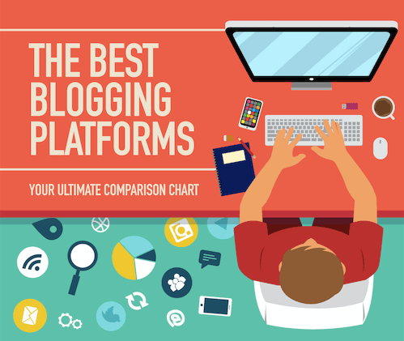

List of Best Free Blogging Sites & Platforms
January 16, 2019 | 56 Comments
You’re here because you’re looking for the best sites to start a blog.
Whether it’s for expressing your passion or hobby, or for business purposes, it’s important that you find the best blogging platform that perfectly suits your needs.